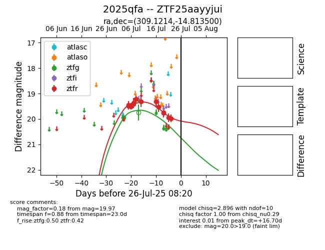

Target 2025qfa at 2025-07-26 08:20, see:
FINK: fink-portal.org/2025qfa
Lasair: lasair-ztf.lsst.ac.uk/objects/2025qfa
ALeRCE: alerce.online/object/2025qfa
TNS: wis-tns.org/object/2025qfa
YSE: ziggy.ucolick.org/yse/transient_detail/2025qfa
alt names
ZTF25aayyjui (ztf,fink)
2025qfa (tns,yse)
coordinates:
equatorial (ra, dec) = (309.1214,-14.81350)
galactic (l, b) = (30.7857,-29.82104)
photometry
last ztfg=19.94, ztfr=19.97
1 ztfg, 13 ztfr detections
